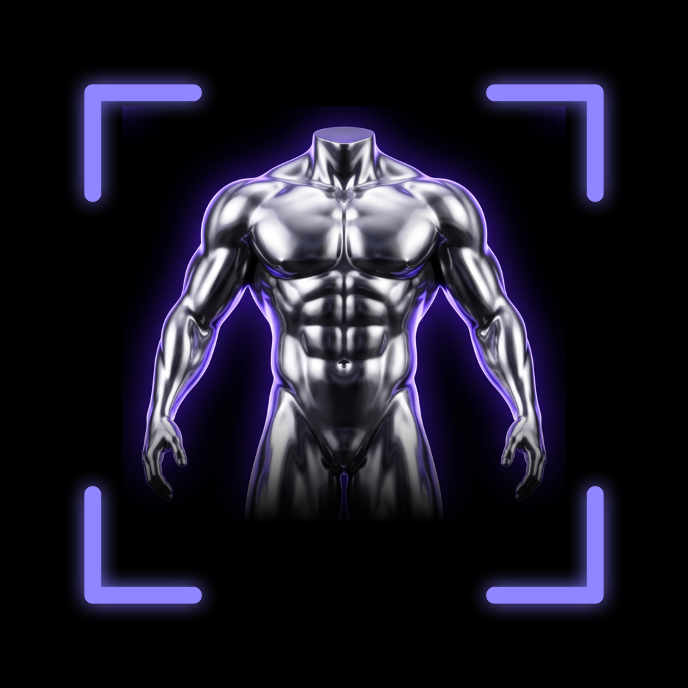

FitMaxSuporte
Escreva para mehmetsancaktutannn3@gmail.com — uma pessoa lê. Use Enviar feedback nos Ajustes: a mensagem inclui automaticamente seu identificador de compra anônimo, a única forma de encontrar sua compra sem conta.
"Não conseguimos ver seu corpo com clareza"
A análise precisa do corpo inteiro no enquadramento, da cabeça aos pés, com roupa justa e luz uniforme. Fique a alguns passos da câmera, evite espelhos e contraluz forte, e tire os três ângulos — frente, lado e costas — do mesmo jeito. Uma foto cortada ou escura é recusada em vez de adivinhada.
As pontuações parecem baixas demais, ou altas demais
Cada pontuação é uma estimativa a partir de uma fotografia. Pose, luz, roupa e distância influenciam todos, por isso compare análises tiradas nas mesmas condições. O método de pontuação é fixo e propositalmente encorajador; é um ponto de partida para o treino, não um veredicto.
Por que a análise me pede para assinar?
Cada análise e cada programa gerado é uma chamada de IA que custa dinheiro real, por isso fazem parte do FitMax Premium. O aplicativo mostra o preço e o período antes de você comprar qualquer coisa. A biblioteca de exercícios, o registro de treinos e os seus relatórios salvos continuam disponíveis sem assinatura.
Assinei, mas o aplicativo continua me pedindo para pagar
Use Restaurar Compras em Configurações. A confirmação da loja pode levar um momento para chegar ao aplicativo. Se persistir, fale com a gente por Enviar feedback nos Ajustes.
Cancelar uma assinatura, ou pedir reembolso
Os dois são tratados pela loja, não por nós: no iPhone, Ajustes → seu nome → Assinaturas; no Android, Play Store → Pagamentos e assinaturas. Cancelar interrompe a próxima renovação e não reembolsa o período atual. Excluir seus dados não cancela a assinatura.
O relatório está no idioma errado
Um relatório é escrito no idioma em que o aplicativo estava definido quando você o executou, e um relatório salvo mantém esse idioma. Mude o idioma do aplicativo e execute uma nova análise para obter um no novo idioma.
Meus relatórios antigos sumiram
Os relatórios e as fotos vivem apenas no celular: são excluídos de propósito do backup do iCloud e não há cópia na nuvem. Apagar o aplicativo, ou usar Excluir Meus Dados em Configurações, os remove permanentemente.
Excluir meus dados
Excluir seus dados — no celular, ou por e-mail para o identificador de compra anônimo.